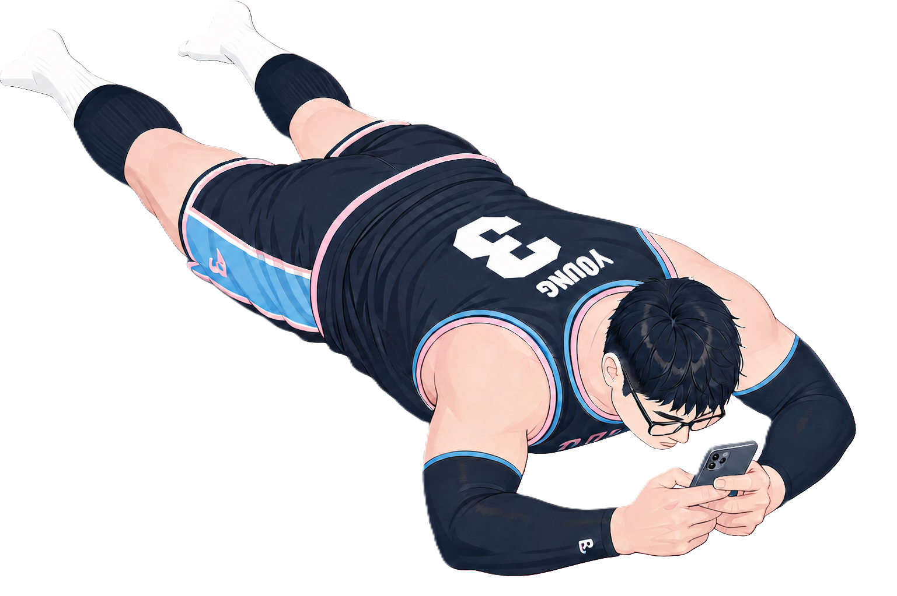

A new version of this portfolio is available.
Reload now to see the latest improvements, or the page will refresh automatically in 10 seconds.
I’m Jordan, a freelance senior full-stack developer with 10 years of experience building SaaS, marketplaces, and complex web applications. My work combines engineering expertise with a creative eye, allowing me to move seamlessly between robust software design and immersive digital experiences.
As a Three.js developer, I create interactive 3D worlds and web experiences that are engaging, performant, and accessible. Whether it’s a subtle effect that adds depth or a fully immersive scene, I focus on crafting visuals that tell a story and leave an impression.
Beyond 3D, I bring deep experience in building scalable SaaS platforms, refactoring legacy codebases, and shipping features that drive real business value. I’m currently available for freelance missions both creative Three.js projects and more traditional web development so if you’re looking to bring your vision to life, let’s connect.
 This portfolio won the
FWA of the Day award
on October 2, 2025.
This portfolio won the
FWA of the Day award
on October 2, 2025.
Let's get in touch to make it happen.
吴昊阳正在这片草地上 —— 选一个方式靠近他
